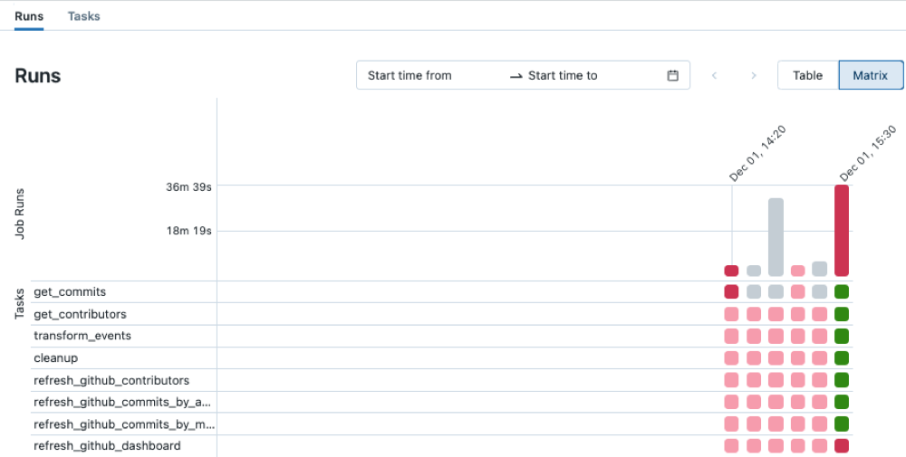

Troubleshoot and repair job failures
Suppose you have been notified (for example, through an email notification, a monitoring solution, or in the Databricks Jobs UI) that a task has failed in a run of your Databricks job. The steps in this article provide guidance to help you identify the cause of failure, suggestions to fix the issues that you find, and how to repair failed job runs.
Identify the cause of failure
To find the failed task in the Databricks Jobs UI:
Click
 Jobs in the sidebar.
Jobs in the sidebar.In the Name column, click a job name. The Runs tab shows active runs and completed runs, including any failed runs. The matrix view in the Runs tab shows a history of runs for the job, including successful and unsuccessful runs for each job task. A task run may be unsuccessful because it failed or was skipped because a dependent task failed. Using the matrix view, you can quickly identify the task failures for your job run.
Hover over a failed task to see associated metadata. This metadata includes the start and end dates, status, duration cluster details, and, in some cases, an error message.
To help identify the cause of the failure, click the failed task. The Task run details page appears, displaying the task’s output, error message, and associated metadata.
Fix the cause of failure
Your task might have failed for several reasons, for example, a data quality issue, a misconfiguration, or insufficient compute resources. The following are suggested steps to fix some common causes of task failures:
If the failure is related to the task configuration, click Edit task. The task configuration opens in a new tab. Update the task configuration as required and click Save task.
If the issue is related to cluster resources, for example, insufficient instances, there are several options:
If your job is configured to use a job cluster, consider using a shared all-purpose cluster.
Change the cluster configuration. Click Edit task. In the Job details panel, under Compute, click Configure to configure the cluster. You can change the number of workers, the instance types, or other cluster configuration options. You can also click Swap to switch to another available cluster. To ensure you’re making optimal use of available resources, review best practices for cluster configuration.
If necessary, ask an administrator to increase resource quotas in the cloud account and region where your workspace is deployed.
If the failure is caused by exceeding the maximum concurrent runs, either:
Wait for other runs to complete.
Click Edit task. In the Job details panel, click Edit concurrent runs, enter a new value for Maximum concurrent runs, and click Confirm.
In some cases, the cause of a failure may be upstream from your job; for example, an external data source is unavailable. You can still take advantage of the repair run feature covered in the next section after the external issue is resolved.
Re-run failed and skipped tasks
After you identify the cause of failure, you can repair failed or canceled multi-task jobs by running only the subset of unsuccessful tasks and any dependent tasks. Because successful tasks and any tasks that depend on them are not re-run, this feature reduces the time and resources required to recover from unsuccessful job runs.
You can change job or task settings before repairing the job run. Unsuccessful tasks are re-run with the current job and task settings. For example, if you change the path to a notebook or a cluster setting, the task is re-run with the updated notebook or cluster settings.
View the history of all task runs on the Task run details page.
Note
If one or more tasks share a job cluster, a repair run creates a new job cluster. For example, if the original run used the job cluster
my_job_cluster, the first repair run uses the new job clustermy_job_cluster_v1, allowing you to easily see the cluster and cluster settings used by the initial run and any repair runs. The settings formy_job_cluster_v1are the same as the current settings formy_job_cluster.Repair is supported only with jobs that orchestrate two or more tasks.
The Duration value displayed in the Runs tab includes the time the first run started until the time when the latest repair run finished. For example, if a run failed twice and succeeded on the third run, the duration includes the time for all three runs.
To repair a failed job run:
Click the link for the failed run in the Start time column of the job runs table or click the failed run in the matrix view. The Job run details page appears.
Click Repair run. The Repair job run dialog appears, listing all unsuccessful tasks and any dependent tasks that will be re-run.
To add or edit parameters for the tasks to repair, enter the parameters in the Repair job run dialog. Parameters you enter in the Repair job run dialog override existing values. On subsequent repair runs, you can return a parameter to its original value by clearing the key and value in the Repair job run dialog.
Click Repair run in the Repair job run dialog.
After the repair run finishes, the matrix view is updated with a new column for the repaired run. Any failed tasks that were red should now be green, indicating a successful run for your entire job.
View and manage continuous job failures
When consecutive failures of a continuous job exceed a threshold, Databricks Jobs uses exponential backoff to retry the job. When a job is in the exponential backoff state, a message in the Job details panel displays information, including:
The number of consecutive failures.
The period for the job to run without error to be considered successful.
The time before the next retry if no run is currently active.
To cancel the active run, reset the retry period, and start a new job run, click Restart run.